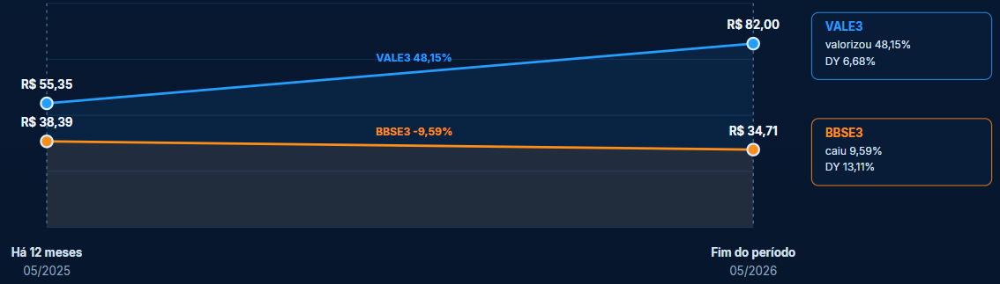
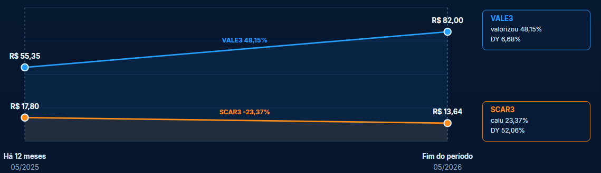
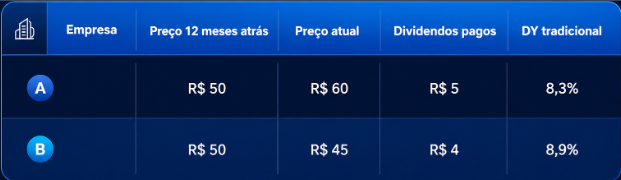
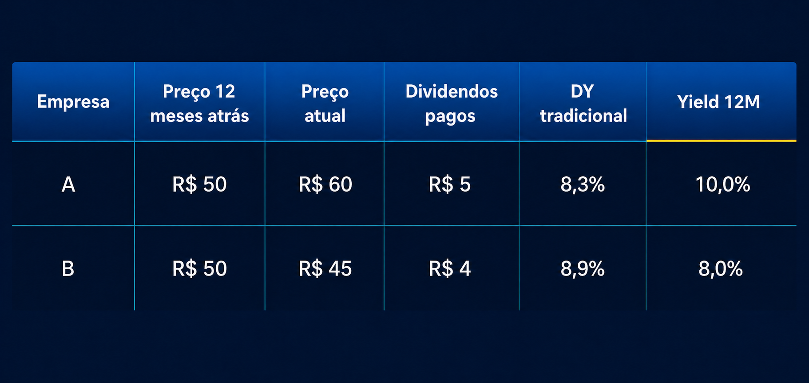

Yield 12M: quando o Dividend Yield engana
Imagine que você analisa uma ação que comprou há 1 ano e se depara com um Dividend Yield de 6,68%, como ocorreu com VALE3 entre maio de 2025 e maio de 2026.
Pouco depois, analisa BBSE3, com 13,11%, e SCAR3, com 52% de DY, e acredita ter acertado em cheio.
Parabéns, você acaba de ser enganado pelos números.
Veja a diferença de performance entre duas delas.

Nitidamente, VALE3 foi muito melhor nesse período, superando até mesmo SCAR3, apesar do seu alto DY.

Problema identificado
O Dividend Yield tradicional é calculado assim:
Dividend Yield tradicional = dividendos pagos nos últimos 12 meses ÷ preço atual da ação
O problema central é que esse indicador mistura duas informações de momentos diferentes:
- dividendos pagos no passado;
- preço da ação no presente.
Isso pode gerar uma leitura distorcida da qualidade da empresa como pagadora de dividendos.
Quando a ação sobe, o Dividend Yield tradicional cai, mesmo que a empresa tenha pago bons dividendos. Quando a ação cai, o Dividend Yield tradicional sobe, mesmo que a empresa esteja passando por problemas.
Ou seja, o indicador pode acabar:
- punindo empresas que valorizaram;
- favorecendo empresas que caíram;
- confundindo dividendos altos com preço depreciado;
- dificultando a identificação de boas pagadoras de dividendos.

Pelo Dividend Yield tradicional, a empresa B parece melhor.
Mas a empresa A pagou mais dividendos e ainda valorizou.
Proposta do novo indicador
A proposta é criar ou usar um indicador alternativo chamado:
Yield 12M
Fórmula:
Yield 12M = dividendos pagos nos últimos 12 meses ÷ preço da ação 12 meses atrás
A ideia é comparar dados do mesmo período:
- preço do início do período;
- dividendos pagos ao longo do período.
Assim, o indicador mede quanto a empresa realmente pagou em dividendos sobre o preço de entrada de quem comprou a ação 12 meses antes.
Estamos usando o Dividend Yield corretamente?

Nesse caso, o Yield 12M mostra que a empresa A foi a melhor pagadora de dividendos no período.
Pergunta que cada indicador responde
O erro não está apenas no cálculo, mas na pergunta que cada indicador tenta responder.
Dividend Yield tradicional
Responde:
“Quanto os dividendos pagos nos últimos 12 meses representam sobre o preço atual da ação?”
Ele pode ser útil para ter uma visão rápida do dividendo em relação ao preço de tela atual.
Mas ele não responde bem se a empresa foi uma boa pagadora de dividendos durante o período.
Yield 12M
Responde:
“Quanto a empresa pagou de dividendos nos últimos 12 meses sobre o preço da ação no início do período?”
Esse indicador é mais adequado para medir o histórico recente de pagamento de dividendos.
Ele não serve sozinho para dizer se a ação está barata ou cara. Ele serve para avaliar a qualidade histórica da empresa como pagadora de dividendos.
Ponto forte principal do Yield 12M
O principal ponto forte é a coerência temporal.
O Dividend Yield tradicional compara:
passado ÷ presente
O Yield 12M compara:
passado ÷ passado
Isso torna a análise mais limpa para avaliar o que aconteceu no período.
O Yield 12M reduz a distorção causada por movimentos recentes de preço. Ele evita que uma ação que caiu pareça automaticamente melhor pagadora apenas porque ficou mais barata.
Principais vantagens:
- mede melhor o dividendo realmente entregue no período;
- reduz o efeito artificial da queda do preço;
- não pune empresas que valorizaram;
- mostra melhor a experiência de quem ficou posicionado nos últimos 12 meses;
- ajuda a identificar empresas que pagam dividendos de forma consistente.
Limitações do Yield 12M
Mesmo sendo mais coerente para avaliar dividendos históricos, o Yield 12M continua sendo um indicador de passado.
Ele não responde sozinho:
- se a empresa está barata;
- se a empresa está cara;
- se o dividendo será mantido;
- se o lucro é recorrente;
- se o payout é sustentável;
- se a dívida está controlada;
- se o fluxo de caixa livre cobre os dividendos;
- se houve dividendo extraordinário;
- se o setor está entrando em ciclo negativo.
Portanto, ele não deve ser usado isoladamente para decisão de compra.
Ele deve fazer parte de um funil maior, junto com indicadores de qualidade, risco, valuation e sustentabilidade dos dividendos.
Yield 12M personalizado
Temos também o indicador Yield Cost, que deve ter uma personalização para cada compra, específica para cada carteira. Ele informa o yield específico de cada operação, sendo mais preciso na análise da carteira.
Mas ele não pode ser um indicador padrão de sites ou de resumos constantes.
Uma análise interessante seria o acompanhamento do Yield Cost da carteira total e por safra. Na carteira total, seria interessante que ele não caísse abaixo de um certo mínimo. Já na análise por safra, o ideal seria observar uma subida constante, por conta do custo fixo e dos lucros crescentes.
Esse é um bom tema para outro estudo.
Mas o Dividend Yield não serve para nada?
Foi feita uma simulação usando os últimos 10 anos de mercado.
Foram comparadas duas estratégias:
| Carteira | Critério |
|---|---|
| Carteira A | Compra as 20% empresas com maior Dividend Yield tradicional |
| Carteira B | Compra as 20% empresas com maior Yield 12M |
Resultado observado:
A carteira A venceu.
Ou seja, a estratégia baseada no Dividend Yield tradicional teve maior retorno total na simulação.
Esse resultado não invalida totalmente a tese do Yield 12M, mas muda a interpretação.
Interpretação da vitória do Dividend Yield tradicional
A principal hipótese é que o Dividend Yield tradicional venceu não por ser um melhor indicador de qualidade de dividendos, mas porque capturou empresas descontadas.
Como o Dividend Yield tradicional sobe quando o preço da ação cai, ele pode ter selecionado empresas que estavam depreciadas no momento da compra.
Se essas empresas depois recuperaram preço, a carteira A teve ganho relevante de valorização.
Nesse caso, o Dividend Yield tradicional funcionou mais como um filtro de:
preço deprimido + reversão à média
E não necessariamente como um filtro de:
melhores empresas pagadoras de dividendos
Isso é importante porque existem duas perguntas diferentes:
Pergunta 1: Qual indicador identifica melhor empresas boas pagadoras de dividendos?
Hipótese: o Yield 12M pode ser melhor.
Pergunta 2: Qual indicador gera maior retorno total?
No teste feito, o Dividend Yield tradicional venceu.
A vitória do DY tradicional pode ter vindo mais da valorização posterior das ações do que dos dividendos recebidos.
Conclusão
O Dividend Yield é um bom indicador para filtrar escolhas de carteira, especialmente quando se busca um mínimo, como 6%, conforme sugerem alguns grandes investidores.
Ainda assim, é um indicador indireto. Sozinho, ele nunca terá uma resposta tão clara sobre valorização ou qualidade dos dividendos quanto o Yield 12M, que pode ser resumido pela lógica: quanto maior, melhor.
Já para analisar o desempenho de ações ou de uma carteira, o Dividend Yield tradicional não é o indicador ideal.
Nesse caso, o Yield 12M é mais adequado. Quando possível, o Yield Cost também pode ser usado para uma análise ainda mais personalizada.